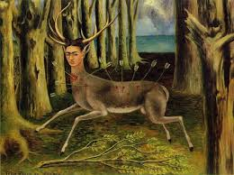
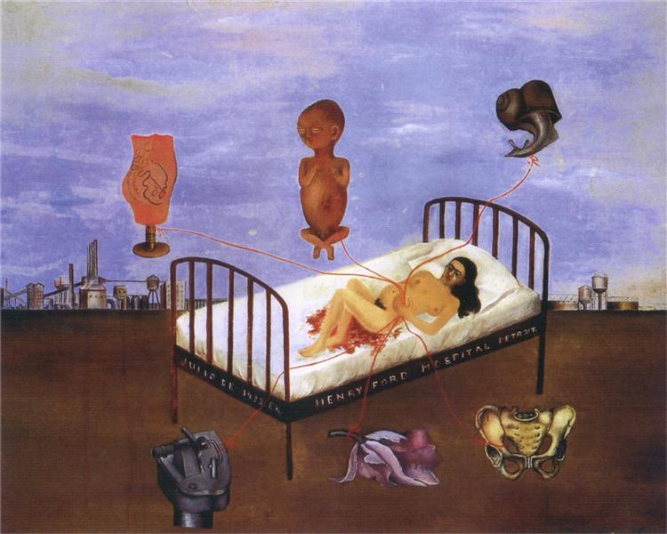

![[Artwork 1 title by Frida Kahlo]](the-two-fridas.jpg)
The Two Fridas, 1939 by Frida Kahlo
This painting was completed shortly after her divorce with Diego
Rivera. This portrait shows Frida's two different personalities.
One is the traditional Frida in Tehuana costume, with a broken
heart, sitting next to an independent, modern dressed Frida. In
Frida's diary, she wrote about this painting and said it is
originated from her memory of an imaginary childhood friend. Later
she admitted it expressed her desperation and loneliness with the
separation from Diego.

The Wounded Deer, 1946 by Frida Kahlo
In this painting, Frida used a young deer with the head of herself
and was fatally wounded by a bunch of arrows. The background is
the forest with dead trees and broken branches, which implied the
feeling of fear and desperation. Far away is the stormy,
lightning-lit sky which brings some hope but the dear will never
be able to reach it. In 1946 Frida Kahlo had an operation on her
spine in New York. She was hoping this surgery would free her from
the severe back pain but it failed. This painting expressed her
disappointment towards the operation. After she went back to
Mexico, she suffered both physical pain and emotional depression.
In this painting she depicted herself as a young stag with her own
head crowned with antlers. This young stag is pierced by arrows
and bleeding. At the lower-left corner, the artist wrote down the
word "Carma", which means "destiny" or "fate". Just like her other
self-portraits, in this painting Frida expressed the sadness that
she cannot change her own fate.

Henry Ford Hospital, 1932 by Frida Kahlo
In this painting, Frida depicts herself in Henry Ford Hospital,
lying on the bed naked with blood and hemorrhage. As in Four
Inhabitants of Mexico, this painting has a very intimate space.
The body is twisted and the bed is tipped up and that adds the
feelings of helplessness and disconnection. The discomfort showed
with the way she painted her body: from the waist up she turns
toward the viewer; from the waist down she turns away. This
painting is a reflection of what Frida felt when she was having a
miscarriage at Henry Ford Hospital. There are six objects flying
around her. A male fetus which is the son of her and Diego she has
longed to have. The fetus is based on a medical illustration. An
orchid looks like a uterus. The stomach she holds against the red
ribbons and they look like umbilical cords. The snail is the
symbol of the slowness of the operation.
.jpeg)